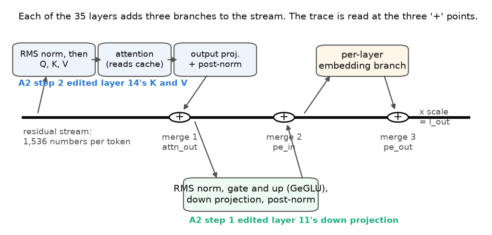

What this is. A guide for understanding exactly what the experiment does: how the data is captured, what a trace is as numbers, how the target is defined, how the place and size of each weight change are chosen, how each change is checked, and what the first round-two edits actually did. It explains the method; it is not the paper. Every number comes from the run records, and the record behind each one is named in Section 11. Section 10 is a set of questions you could be asked about this work, with short answers.
Your starting point is a theory about weights. A weight does not hold a fact or a skill by itself. Weights mostly act like the faders on a mixing desk: they decide how strongly each part of the incoming signal is passed on and where it goes. A capability is then a pattern of routing, a recognisable way information moves through many weights when the model does a certain kind of work. If that is true, you should be able to see the pattern by recording how the signal moves, compare it between answers where the model gets something right and answers where it gets it wrong, and compute the weight change that moves the wrong routing toward the right one.
The experiment makes that concrete with one model and one mistake. Gemma 4 E2B solves an energy problem: an
object starts moving, goes down a slope, loses some energy on a rough patch, then climbs. It must report the
available energy, the required energy, and whether it makes it. A common mistake is to add the earlier
descent to the final climb: for a 3 m climb after a 1 m descent it computes the required energy for 4 m.
We call this error final_climb_includes_descent.
The work has four parts, and the rest of this guide follows them in order:
Each token the model reads or writes becomes a list of 1,536 numbers, called the residual stream for that token. Think of it as a running summary that every layer reads and then adds to. Gemma 4 E2B has 35 layers. Each layer adds three things to the stream, one after another (Figure 1):
So for each token there are 35 × 3 = 105 merge points. Before each branch, the stream is normalised (RMS norm: divided by its typical size), and after each branch the result is normalised again and scaled by learned weights. That normalisation matters later: what the network mostly reads is the stream's direction, not its raw size.
One detail of this model became important. Layers 15 to 34 do not keep their own caches. They reuse the caches written by layers 13 and 14. Layer 14's keys and values are read by five layers: 14, 19, 24, 29 and 34.

attn_out, pe_in and an unnamed addition we label
pe_out. The first round-two edits changed weights in two of these branches.The model runs in llama.cpp, a C++ inference engine. For every token it builds a graph: a list of about 1,500 small operations (matrix multiplications, normalisations, additions, attention) with each operation's inputs wired to earlier outputs. The engine then runs the graph on the GPU. llama.cpp lets a program register a callback: before any operation runs, the engine asks "do you want to see this one?", and if the answer is yes, it stops after that operation so the program can copy its result off the GPU.
Our recorder is that callback. It never changes a value. To prove it, every recording is checked against an ordinary run of the same question: every generated token must be identical, and so must a fingerprint (a SHA-256 hash) of the full list of 262,144 vocabulary scores at every step. If a single score differed anywhere, the hash would differ.
The full recorder says yes to every operation. For each one it copies every input before the operation and its output after, and links each input to the operation that produced it, including reads from the cache. This gives a complete wiring diagram of the computation: one 479-token answer produced 724,064 recorded operations and 9.3 GB of values. It is also slow, about 375 seconds per answer, because it pauses the GPU around 1,500 times per token.
The selected-position recorder uses the full recorder only at a few chosen tokens and lets everything else run normally. That is how the construction probes work (Section 8).
The stream recorder keeps only what the trace analysis uses, at every token: the incoming stream, each branch's contribution and the result at all 105 merges (247 tensors per token, outputs only, no pauses for inputs). A wider mode also keeps the inputs of every weight matrix plus the attention queries, keys and values, which is enough to solve for a weight change anywhere and to rebuild attention offline. It takes about 15 seconds per answer, close to ordinary generation (Figure 3). Its values were checked bit for bit against the full recorder: 55,081 tensors in one mode and 100,796 in the other on GPU0, and 97,632 on GPU1, with zero differences.
An analogy: the full recorder is a flight data recorder that logs every switch in the cockpit. The stream recorder is a dashcam pointed at the road. For most questions about where the plane went, the dashcam is enough, and when it is not, the flight recorder is still there for the few moments that matter.
Only answers the model wrote itself. An earlier attempt fed the model our corrected answer and recorded that; it was excluded, because a supplied answer changes the history you are trying to observe. Greedy decoding (always taking the top token) makes every answer exactly repeatable. From 283 screened questions, 45 were usable: 18 that made the target error and 27 that solved the problem correctly, each on its assigned GPU. The 40 reserved questions were fixed before any of this and have not been read.